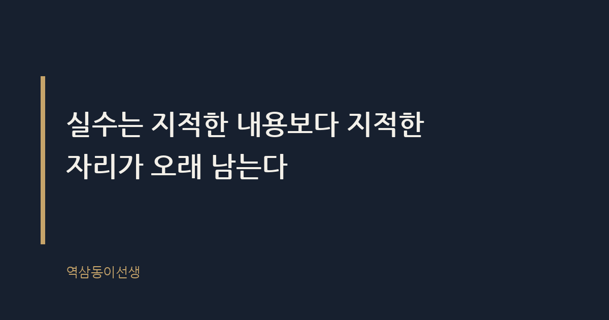
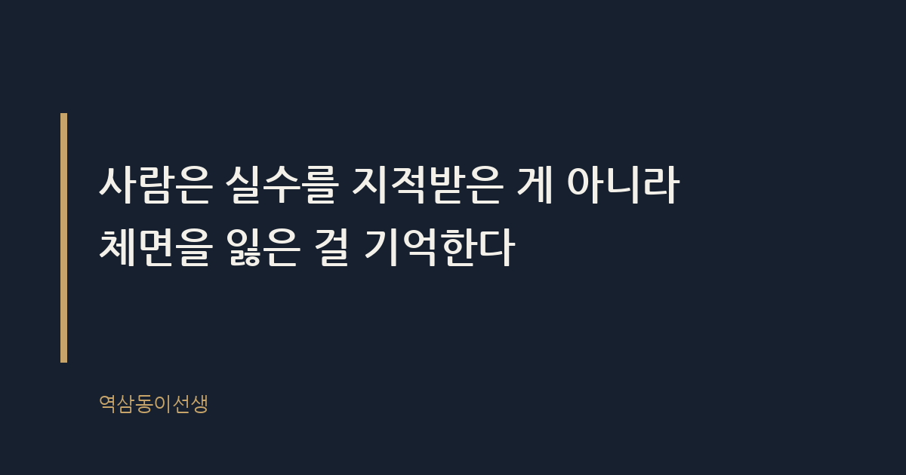

주제 동료의 실수를 기분 나쁘지 않게 말하는 법 (evergreen / office)
제목 후보
메타 설명 동료의 실수를 지적할 때 관계가 틀어지는 이유와, 회의실에서 바로 써먹는 예시 문장을 정리했다.
라벨 직장생활, 회사생활팁, 동료관계, 피드백화법, 회의실매너, 직장인소통, 업무커뮤니케이션, 신입사원팁, 상사후배관계, 직장인공감
실용 자산 예시 문장 모음 — 검색 의도가 '바로 써먹을 화법'이므로 상황별 예시 문장과 피할 표현을 대비시키는 examples 자산이 적합하다
발행 전 팩트체크
이미지 (Blogger 편집기에 드래그해 넣으세요)
도입부 사진 · ⓒ Pexels / Pexels


지난 분기 임원 회의실. 신입 팀장이던 박 과장이 프레젠테이션을 맡았다. 화면에 뜬 매출 증가율이 240%로 찍혀 있었다. 다들 고개를 갸웃하는 사이, 옆자리 전무가 먼저 입을 열었다. "이거 자릿수 잘못 넣은 거 아니야?" 회의실에 있던 열두 명의 눈이 일제히 박 과장에게 쏠렸다. 그는 얼굴이 벌게진 채로 "죄송합니다, 다시 확인하겠습니다"만 반복했다. 회의는 10분 만에 끝났지만, 박 과장은 그 후 두 달 가까이 발표 자리를 피해 다녔다.
동료의 실수를 지적하는 방식이 실수 자체보다 더 오래 기억에 남는다. 숫자는 금방 고쳐진다. 그런데 그 순간 느낀 창피함은 오래간다. 옆에서 수없이 지켜본 결과, 동료 실수를 짚어줄 때 내용보다 중요한 건 "어디서, 누구 앞에서, 어떤 말투로"였다.
동료 실수를 지적하는 피드백이란, 문제를 바로잡으면서 동시에 상대의 신뢰를 지키는 소통이다. 그런데 현장에서는 이 둘 중 한쪽만 챙기는 경우가 많다. 문제를 바로잡는 데만 집중한 나머지 "이거 왜 이렇게 했어요"라는 질문형 추궁이 튀어나온다. 질문형으로 묻지만 실제로는 추궁이라는 걸 듣는 사람은 바로 안다.
더 흔한 패턴은 '다수 앞에서 선의로' 지적하는 경우다. 회의 중에 "이 부분 숫자가 이상한데요"라고 말하는 사람은 자신이 공정하고 투명하다고 생각한다. 하지만 지적받는 당사자 입장에서는 그 공정함이 공개 처형으로 느껴진다. 박 과장 사건을 복기해보면, 전무는 틀린 게 없었다. 숫자는 분명 틀렸고, 지적은 정확했다. 문제는 그 자리와 타이밍이었다.
사회학자 어빙 고프먼이 말한 체면 이론(face theory)이란, 사람은 사회적 상호작용에서 '남 앞에서 보여지는 자신의 이미지'를 지키려는 본능이 있다는 이론이다. 회의실, 특히 상사나 타 부서 사람이 섞여 있는 자리는 체면이 가장 민감하게 작동하는 공간이다. 동료 실수를 여럿이 보는 앞에서 지적하면 관계가 틀어지는 이유는, 지적받는 사람이 '실수를 고쳐야 할 일'로 받아들이기 전에 '체면을 잃은 사건'으로 먼저 받아들이기 때문이다.
체면을 잃은 사람은 방어적으로 변한다. 방어적인 사람은 같은 지적을 들어도 받아들이지 않고 변명거리부터 찾는다. 결국 공개 지적은 실수를 고치는 속도를 오히려 늦춘다. 겉으로는 즉각 효과가 있어 보이지만, 장기적으로는 그 사람이 다음 실수를 숨기게 만드는 부작용을 낳는다. 박 과장이 두 달간 발표를 피한 건 숫자를 못 고쳐서가 아니라, 또 그런 자리에 서는 게 두려워서였다.
그 두 달 동안 벌어진 일이 더 흥미롭다. 박 과장은 발표를 피하는 대신 자료를 팀원 세 명에게 돌려 미리 검수받는 습관을 들였다. 겉으로는 꼼꼼해졌다는 평을 들었지만, 속내를 아는 사람은 그게 또 틀릴까 봐 생긴 불안이라는 걸 알았다. 지적 한 번이 한 사람의 일하는 방식을 두 달간 바꿔놓은 셈이다.
같은 실수라도 지적받는 사람의 연차에 따라 체감 온도가 다르다. 입사 1년 차 후배에게 "이거 틀렸네요"라고 말하면 그 말은 업무 피드백이 아니라 '나는 이 일에 안 맞나'라는 자기 의심으로 번진다. 경력이 쌓인 사람은 실수와 자존감을 분리할 줄 알지만, 신입은 그 둘을 분리하는 법을 아직 배우지 못했다.
옆에서 보니 일 잘 가르치는 선배들은 후배의 실수를 지적할 때 반드시 '방법'을 함께 알려줬다. "이 부분 틀렸어" 대신 "이 부분은 이렇게 확인하면 다음엔 안 틀려"라고 말하는 식이다. 반대로 동료나 선배급에게는 방법을 알려주려 들면 오히려 가르치려 든다는 인상을 준다. 그럴 땐 "이거 어떻게 생각해?"라고 판단을 먼저 물어보는 쪽이 낫다. 지적의 내용은 같아도, 상대의 연차에 따라 포장을 다르게 해야 체면이 덜 상한다.
말투 하나 바꾸는 것만으로 같은 지적이 다르게 들린다. 실제로 써본 문장들을 상황별로 정리했다.
말을 아무리 부드럽게 해도 타이밍이 틀리면 소용없다. 타이밍이 말투보다 중요한 이유는, 지적의 '내용'은 기억에서 흐려지지만 지적받은 '장소와 순간'은 감정으로 각인되기 때문이다. 같은 말이라도 단둘이 있을 때 들으면 조언이고, 여럿이 있을 때 들으면 심판이 된다.
옆에서 지켜본 결과, 결국 잘 되는 사람들은 동료 실수를 발견했을 때 "지금 말해야 하나, 나중에 말해야 하나"를 먼저 따졌다. 급하게 고쳐야 할 실수(고객에게 나가기 직전인 자료, 당장 수치가 틀린 보고서)는 조용히 바로 알려준다. 급하지 않은 실수(말투, 태도, 반복되는 습관)는 하루 정도 묵혀서 감정이 가라앉은 뒤에 따로 불러서 말한다.
요즘 실수는 회의실보다 단체 채팅방에서 먼저 터진다. 팀 전체가 들어있는 카톡방이나 사내 메신저 채널에 숫자가 틀린 파일이 공유되면, 그 순간 지적할지 넘어갈지 손가락이 멈칫거린다. 여기서 흔히 저지르는 실수가 채팅방에 바로 "이거 숫자 틀린 것 같은데요?"라고 남기는 것이다. 텍스트는 말보다 더 오래 남고, 캡처되고, 다시 읽힌다. 회의실에서의 한마디보다 파급력이 크다.
채팅방에서 실수를 봤을 때 가장 무난한 방식은 공개 채널에 반응을 남기지 않고 1:1 메시지로 조용히 알리는 것이다. "방금 올려준 자료 B열 숫자 한 번만 다시 봐줄래?" 정도면 충분하다. 당사자가 스스로 고쳐서 다시 올리면, 처음부터 틀린 적 없던 것처럼 넘어갈 수 있다. 체면을 지켜주는 가장 쉬운 방법은 '고칠 기회'를 공개적으로 뺏지 않는 것이다.
많은 사람이 지적하는 순간까지만 신경 쓰고, 지적한 뒤는 신경 쓰지 않는다. 그런데 관계가 틀어지느냐 아니냐는 보통 그 다음에 결정된다. 박 과장 사건에서 인상적이었던 건, 다음 날 그 전무가 박 과장을 따로 불러 "어제는 내가 너무 급하게 말했다, 숫자는 누구나 틀릴 수 있다"고 짧게 말을 건넨 장면이었다. 그 한마디로 박 과장은 두 달이 아니라 일주일 만에 다시 발표 자리에 섰다.
동료 실수를 지적한 뒤에는 반드시 '이 사람이 무능해서가 아니라 누구나 할 수 있는 실수'라는 메시지를 따로 남겨야 한다. 이게 없으면 지적은 교정이 아니라 낙인으로 남는다. 낙인이 찍힌 사람은 같은 실수를 반복하지 않으려고 아예 그 업무를 피하게 된다. 조직 입장에서는 가장 아까운 손실이다.
동료 실수를 어떻게 지적하느냐는 그 사람의 능력을 평가하는 문제가 아니라, 그 조직에서 실수해도 되는지를 보여주는 신호다. 실수를 지적받은 사람이 다음에도 솔직하게 손을 들고 "제가 틀렸습니다"라고 말할 수 있다면, 그건 지적이 잘 된 조직이라는 뜻이다. 반대로 다들 실수를 숨기기 시작하면, 그 조직은 작은 오류가 큰 사고로 터질 때까지 아무도 눈치채지 못한다.
씁쓸하면서도 꽤 인상적인 건, 정작 말을 잘하는 사람보다 침묵을 잘 지키는 사람이 더 신뢰받더라는 사실이다. 회의실에서 지적하지 않고 넘어갔다가 따로 불러 조용히 짚어주는 그 몇 초의 배려가, 긴 설명보다 오래 남는다.
Q. 동료 실수를 회의실에서 바로 지적받고 하루 종일 그 생각만 한 적, 저만 있는 건 아니죠?